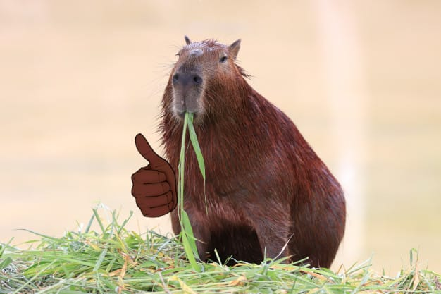
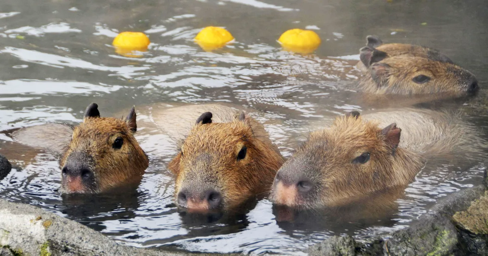
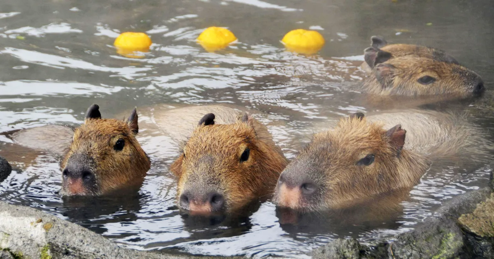
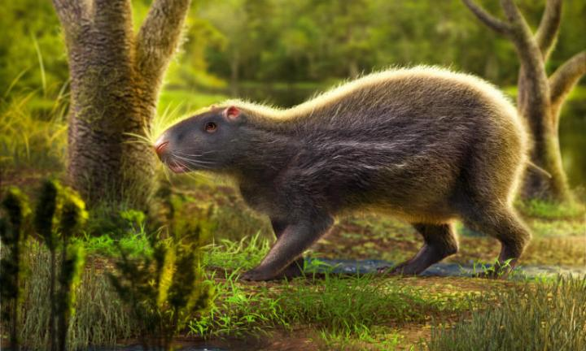

● As queridas capivaras são animais nativas da América do Sul, são calmas e bem mansas.
Elas habitam em locais de ambiente aquático, pois a água é o essencial para as várias de suas atividades, como se esconder
de predadores e reproduzir-se.
● Costumam viver em grupos que variam de tamanho e apresentam uma organização social, de 2 a 30 animais, tendo um
macho dominante mas também se tem a presença de várias fêmeas e de indivíduos mais jovens.
● Elas possuem um corpo robusto e musculoso coberto por pelos marrom-escuros e podem atingir cerca de 1,3 m de comprimento e 60 cm de altura. E seu peso pode variar e, ficar em média de 20 kg a 80 kg.
 

● Sua expectativa de vida, infelizmente, dura até 15 anos.
● O nome científico dessa beldade é Hydrochoerus hydrochaeris. O gênero desse animal (Hydrochoerus) significa "porco d'água" e é uma referência ao local onde as capivaras vivem e aos hábitos desses animais. Seu nome popular, de origem tupi-guarani, também apresenta um significado interessante: “comedor de capim”. Os registros mais antigos de uma capivara são de 7 a 9 milhões de anos atrás (antes mesmo dos australopithecus). A princípio, elas surgiram na Argentina.
➥ Reconstrução artística do roedor Neoepiblema acreensis feita por Márcio L. Castro:
● Essa criatura charmosa são os maiores roedores do mundo e excelentes nadadores, pois são mamíferos semiaquáticos.
● As capivaras são animais herbívoros e seguem uma dieta se alimentando de capim, grama, vegetação aquática e ervas.
● Mas não se deixe ser enganado por essa cara de bom caminho, por serem roedores as capivaras possuem dentes grandes, que em caso de uma mordida pode ferir e bastante uma pessoa. E não é só a sua mordida que é preocupante mas também esses comedores de capim costumam ser hospedeiras naturais do carrapato-estrela, um aracnídeo transmissor da febre maculosa, que pode ser fatal para um ser humano. Por isso agradeça que esse animal que não costuma ser agressivo a não ser que se sinta ameaçado, mas quando encontram alguma coisa que faz elas se sentirem amedrontadas elas emitem um barulho semelhante com a de um latido e fogem para a água ou para a mata.
● Hoje em dia, as capivaras estão na categoria “pouco preocupantes” na Lista Vermelha de Espécies Ameaçadas da União Internacional para a Conservação da Natureza e dos Recursos Naturais (IUCN). Resumidamente, elas não apresentam grandes riscos de entrar em extinção!
● As capivaras parecem ser os animais mais sociáveis e "gente boa" do reino animal e, inclusive, são melhores que muita gente.🌸